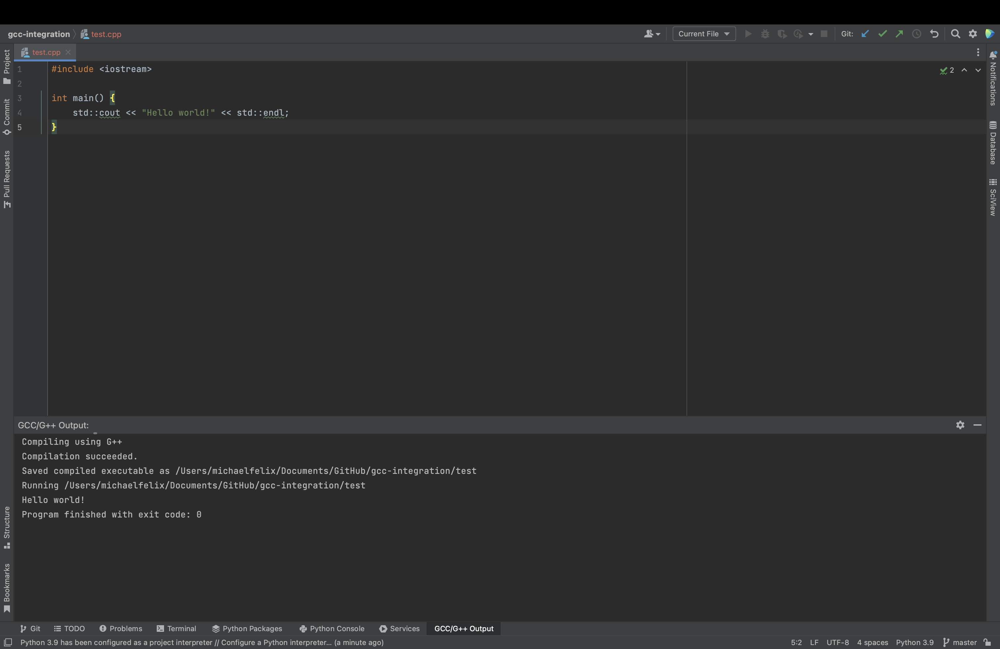

JetBrains GCC Integration#
This is a JetBrains IDE Plugin specifically designed for IDEs that do not have c/cpp support such as PyCharm. Its functionality is simple - it adds a keyboard shortcut that can run the GCC/G++ compiler on the active file (GCC must be already installed and in your system PATH).
The default keyboard shortcut is control + G.
Dependencies#
GCC must be installed separately. To download, follow these steps:
Windows#
Visit https://sourceforge.net/projects/mingw/ and download.
In the GUI under “basic setup”, check off
mingw32andmingw32gcc-g++Click “Installation > Apply Changes”
Add MingW32 to your System path (
C:\MinGW\bin)
Mac#
Run the command brew install gcc
Installation#
You can either install directly through PyCharm, or install from its GitHub releases.
To install directly through PyCharm, open
PyCharm --> Settings --> Pluginsand search for it on the marketplace
Manual Install#
To manually install, visit the latest GitHub release and download the
.jar. OpenPyCharm --> Settings --> Plugins, click the Settings cog and chooseInstall Plugin from disk...
Usage#
If the file that’s open in the editor is of type .c or .cpp, press control + G to send it straight to the GCC/G++ compiler in a new IDE Tool Window. If the file successfully compiles, this plugin will also run the created executable in the same toolwindow.

Modifying the Plugin’s Behavior#
To view how to add optional settings to the plugin’s behavior per each file, read here